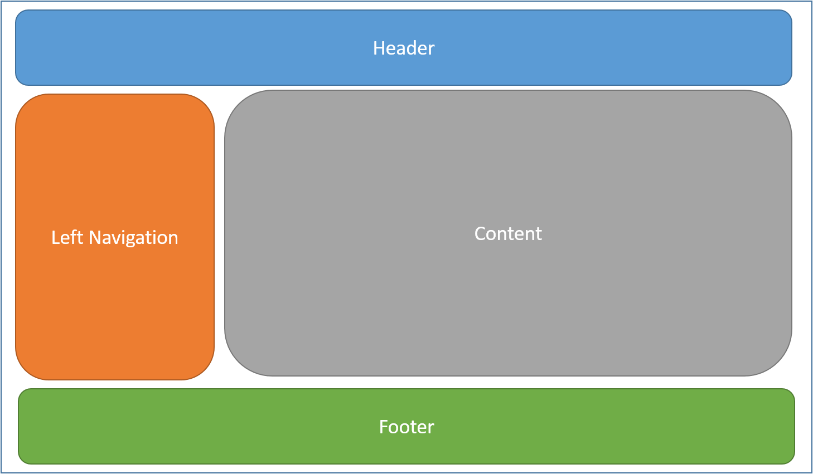

Layout¶
By Steve Smith
Views frequently share visual and programmatic elements. In this article, you’ll learn how to use common layouts, share directives, and run common code before rendering views in your ASP.NET app.
Sections
What is a Layout¶
Most web apps have a common layout that provides the user with a consistent experience as they navigate from page to page. The layout typically includes common user interface elements such as the app header, navigation or menu elements, and footer.
Common HTML structures such as scripts and stylesheets are also frequently used by many pages within an app. All of these shared elements may be defined in a layout file, which can then be referenced by any view used within the app. Layouts reduce duplicate code in views, helping them follow the Don’t Repeat Yourself (DRY) principle.
By convention, the default layout for an ASP.NET app is named _Layout.cshtml. The Visual Studio ASP.NET MVC project template includes this layout file in the Views/Shared folder:
This layout defines a top level template for views in the app. Apps do not require a layout, and apps can define more than one layout, with different views specifying different layouts.
An example _Layout.cshtml:
<!DOCTYPE html>
<html>
<head>
<meta charset="utf-8" />
<meta name="viewport" content="width=device-width, initial-scale=1.0" />
<title>@ViewData["Title"] - WebApplication1</title>
<environment names="Development">
<link rel="stylesheet" href="~/lib/bootstrap/dist/css/bootstrap.css" />
<link rel="stylesheet" href="~/css/site.css" />
</environment>
<environment names="Staging,Production">
<link rel="stylesheet" href="https://ajax.aspnetcdn.com/ajax/bootstrap/3.3.6/css/bootstrap.min.css"
asp-fallback-href="~/lib/bootstrap/dist/css/bootstrap.min.css"
asp-fallback-test-class="sr-only" asp-fallback-test-property="position" asp-fallback-test-value="absolute" />
<link rel="stylesheet" href="~/css/site.min.css" asp-append-version="true" />
</environment>
</head>
<body>
<div class="navbar navbar-inverse navbar-fixed-top">
<div class="container">
<div class="navbar-header">
<button type="button" class="navbar-toggle" data-toggle="collapse" data-target=".navbar-collapse">
<span class="sr-only">Toggle navigation</span>
<span class="icon-bar"></span>
<span class="icon-bar"></span>
<span class="icon-bar"></span>
</button>
<a asp-controller="Home" asp-action="Index" class="navbar-brand">WebApplication1</a>
</div>
<div class="navbar-collapse collapse">
<ul class="nav navbar-nav">
<li><a asp-controller="Home" asp-action="Index">Home</a></li>
<li><a asp-controller="Home" asp-action="About">About</a></li>
<li><a asp-controller="Home" asp-action="Contact">Contact</a></li>
</ul>
@await Html.PartialAsync("_LoginPartial")
</div>
</div>
</div>
<div class="container body-content">
@RenderBody()
<hr />
<footer>
<p>© 2016 - WebApplication1</p>
</footer>
</div>
<environment names="Development">
<script src="~/lib/jquery/dist/jquery.js"></script>
<script src="~/lib/bootstrap/dist/js/bootstrap.js"></script>
<script src="~/js/site.js" asp-append-version="true"></script>
</environment>
<environment names="Staging,Production">
<script src="https://ajax.aspnetcdn.com/ajax/jquery/jquery-2.2.0.min.js"
asp-fallback-src="~/lib/jquery/dist/jquery.min.js"
asp-fallback-test="window.jQuery">
</script>
<script src="https://ajax.aspnetcdn.com/ajax/bootstrap/3.3.6/bootstrap.min.js"
asp-fallback-src="~/lib/bootstrap/dist/js/bootstrap.min.js"
asp-fallback-test="window.jQuery && window.jQuery.fn && window.jQuery.fn.modal">
</script>
<script src="~/js/site.min.js" asp-append-version="true"></script>
</environment>
@RenderSection("scripts", required: false)
</body>
</html>
Specifying a Layout¶
Razor views have a Layout property. Individual views specify a layout by defining this property:
@{
Layout = "_Layout";
}
The layout specified can use a full path (example: /Views/Shared/_Layout.cshtml) or a partial name (example: _Layout). When a partial name is provided, the Razor view engine will search for the layout file using its standard discovery process. The controller-associated folder is searched first, followed by the Shared folder. This discovery process is identical to the one used to discover partial views.
Every layout must call RenderBody. Wherever the call to RenderBody is placed, the contents of the view will be rendered.
Sections¶
A layout can optionally reference one or more sections, by calling RenderSection. Sections provide a way to organize where certain page elements should be placed. Each call to RenderSection can specify whether that section is required or optional. Individual views specify the content to be rendered within a section using the @section Razor syntax. If a view defines a section, it must be rendered (or an error will occur).
An example @section definition in a view:
@section Scripts {
<script type="text/javascript" src="/scripts/main.js"></script>
}
In the code above, validation scripts are added to the scripts section on a view that includes a form. Other views in the same application might not require any additional scripts, and so wouldn’t need to define a scripts section.
Sections only flow from views. They cannot be referenced from partials, view components, or other parts of the view system.
Running Code Before Each View¶
If you have code you need to run before every view, this should be placed in the _ViewStart.cshtml file. By convention, the _ViewStart.cshtml file is located in the root of the Views folder. The statements listed in _ViewStart.cshtml are run before every full view (not layouts, and not partial views). Like ViewImports.cshtml, _ViewStart.cshtml is hierarchical. If a _ViewStart.cshtml file is defined in the controller-associated view folder, it will be run after the one defined in the root of the Views folder (if any).
A sample _ViewStart.cshtml file:
@{
Layout = "_Layout";
}
The file above specifies that all views will use the _Layout.cshtml layout.
Note
Neither _ViewStart.cshtml nor _ViewImports.cshtml are placed in the /Views/Shared folder. The app-level versions of these files should be placed directly in the /Views folder.